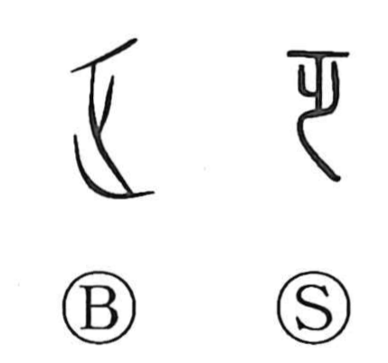

乏

Kun: toboshii | On: bou
scarce ・ meager ・ to lack
Explanation
This character began as a pictograph of a body lying on its back—a supine corpse. In the same graphic family, 泛 depicts a corpse floating face up on water, 氾 shows one floating face down, and 窆 portrays the act of lowering the dead into a grave pit. From this stark image of depletion, the character took on the sense of want and insufficiency. Hence its use in compounds such as 匱乏, 欠乏, 耐乏, and 貧乏 to express shortage, lack, enduring scarcity, and poverty—everything marked by meagerness or being in short supply.